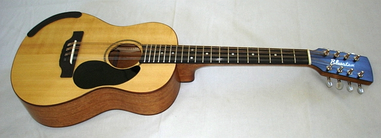
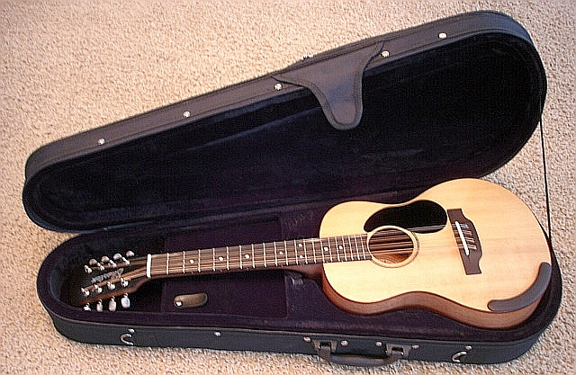

Select your area of interest:
Home* Lap Steel* 3 String Guitar* "Regular" Guitar* Violin* Bass*Banjo* Mandolin* Ukulele* Home Recording* Links
Mandolin Family Information:
My First "Real" Mandolin

I had a couple of odd-ball "starter" mandos; an old Kaycraft that used to belong to my uncle and a couple of hastily thrown together experiments, but this was my first real attempt at making a quality instrument. I was initially going to make an "A", but when I told my wife of my intentions she asked "Why don't you make a Florentine?" I figured since she actually knew what it was I should at least entertain her idea. This one was built from the Siminoff book and turned out so well I'm still playing it today. I added a Acoustic Feather pickup and output jack and it's since been through countless bar gigs, has turned a lovely darkened yellow, and has all the nicks, scars, and scrapes of the Velveteen Rabbit. I've never had the urge to better myself on this one.
Old Kay to OK (... or "Octave Kay")
This project resulted from saving an old Kay guitar body for the last 45 years! I didn't know at the time exactly how or when I'd use it, but I've been shuffling it around for that long. Sentiment, and partially guilt, was the cause of this. The Kay belonged to my dad and I accidentally broke the headstock off when I was around 15 years old so I cut the neck off and held on to the body.Since I'm not getting any younger I had been thinking about converting it into a Rawlings-style player, but I already have enough guitars in my arsenal. When my good buddy brought over his brand new Weber Octar I immediately saw the possibility of utilizing the Kay body as the basis for a similar instrument. Since I already have a standard mandolin and a slightly longer scale low mandolin (see below) it was a natural progression to consider an octave.
The stars aligned and the conversion process moved forward when I purchased a 23-1/2" scale take-off neck from a Taylor GS Mini (Reverb.com / $60) and a spare set of take-off Taylor GS Mini tuners (E-bay / $15). Now all I needed to do was fabricate a tail piece, make an adjustable bridge, and assemble the parts.

Here's a shot of the headstock after conversion with the original Taylor overlay shown at right. It was a simple matter to peel off the Taylor overlay (by applying a bit of heat from a heat gun on low setting), plug the center tuner holes, re-drill to accommodate two additional tuners spaced between the upper and lower ones, and add a new overlay made from 1/16" Garolite XX opaque black sheet material. A bit of re-shaping to lose the Taylor shield at the top put the finishing touches on the conversion process. The neck was narrowed and re-shaped for a 1-1/2" nut width (2" at body junction) and finished by warming the neck's newly sanded surface and applying pure Beeswax. I've gone to this finishing process for the necks on all of my new instruments, as it produces a beautiful finish that has a "speed neck" feel, but also offers a beautiful finish with moisture protection.

The brass tail piece turned out quite nicely. What I had in mind:
(1) Attractive in appearance (no sense making an ugly tail piece!)
(2) Accept ball end phosphor bronze ball end guitar strings (I purchase these in the bulk from Musician's Friend). The strings are an easy to remember .011" / .022"w / .034"w / .044"w, all multiples of 11 with the exception of the .034"w (Musician's Friend doesn't carry a .033"w in bulk)
(3) Cover up a 7/8" diameter hole bored through the end block to allow a 3/4" socket to be inserted to tighten the neck bolt
(I might even get around to filling the old trapeze tailpiece mounting holes someday...)

An adjustable bridge (left) was fashioned from small pieces from my ebony scrap box.
The Kay arch top f hole laminated mahogany body (K-20 was most likely the model number that was stamped on the rear of the long-gone headstock...) featured painted "binding" that was worn off in some areas so I removed it by rubbing with an alcohol-dampened rag. That process removed the painted binding without damaging the basic finish. The body doesn't look half bad with the fake binding removed!
I then spent an entire day making two pattern routing jigs to route the close fitting neck heel and tongue extension pockets so the Taylor neck would bolt on at the correct angle to result in approximately 3/4" string clearance over the body when the adjustable bridge was added. The top pocket exposed the two top braces, so that was an excellent opportunity to add a maple reenforcement block between the two braces and glued to the top plate. The top pocket was then re-cut into the newly added block.

The proverbial bottom line...
This conversion sounds simply fantastic. Why is that? I had a strong hunch this was going to be a good bet as the body is constructed in a similar manner as my Taylor GS Mini; an instrument that sounds much better than it should for it's diminutive size. I attribute the Taylor GS Mini's volume and sonorous tone to the thin ply laminated pressed arch body assembled without rear bracing; exactly the combination that Kay used on this body. The standard picking position results in great sound with a marked increase in bass and resonance as the pick is moved more toward the fretboard end. It is also most noticeably better when it is held loosely without inhibiting the back vibration. I had also noticed this when I played my friend's Weber Octar. That's not a bad thing, but something to be aware of as you play. The smaller body thickness also makes this instrument quite comfortable to play for long stretches of time.
Here's a quick video demonstration. The tune is "Kay's Second Go Around"
Low Tuned Mandolin
This one was the result of wanting an instrument to accompany my preferred singing keys of E and A, but not wanting a higher pitched instrument. An octave mandolin would have given me the same keys and a mandola was still a bit too high, so I went with something in-between tuned A-E-B-F#. I was really at a loss when people asked me what it was, so I just called it Low Mandolin. Wanting something that was unique (but that a soft case was available for) I chose the body shape of a baratone ukulele. It's really a sweet instrument, demo videos are linked below.

Here's a couple of video demonstrations of my Low Tuned Mandolin:
Fairbury's Fancy
Hula Zen
The Smallest Difference
Low Tuned Mandolin features:
- Comfortable 19" scale length with 20 medium nickel-silver frets
- Small guitar-shaped body profile, 30-3/8" long by 10-1/4" wide by 3-3/8" body depth
- Strung with readily available ball end phosphor bronze ball end guitar strings
- Purchasing bulk 12 packs of ball end strings results in a string cost of less than $2.50 per set
- Tuning similar to octave mandolin, but raised a full step to A-E-B-F#
- G fingerings play key of A, D fingerings play key of E, etc.
- Designed to fit inexpensive Lanikai semi-rigid foam baritone uke case
- Mahogany neck with 2024-T4 solid aircraft aluminum neck reinforcement bar
- Mahogany body with solid spruce top and Cocobolo bindings
- Ebony bridge, fret board, head stock overlay, heel cap, and rear center seam joint
- Mother of pearl head stock inlay and fret board position markers
- Contoured ebony arm rest for ultimate comfort
- Shallar A style Mandolin tuners
I'm totally enthralled with the shape, sound, and ergonomics of this instrument and I'd like to see a lot more players become equally enthused about it. I'm not motivated to produce large numbers of these, therefore I'm making the full plan available as part of the construction guide package shown below to encourage other builders to follow suit.
Bluestem Low Tuned Mandolin Construction Guide on CD with full size plan!
I've been unable to find anything like the Low Tuned Mandolin commercially available, but the option exists for a prospective player to have a copy built by a local luthier willing to custom build from the plan.A full size 35" by 35" printed plan, CD with 320 photos documenting the construction of this instrument, and accompanying descriptive text is available to guide anyone wanting to duplicate a Low Tuned Mando for themselves or if its desired to enlist the services of a luthier for a custom project.
The guide is currently priced at $25 with first class US post office shipping included within the United States, the cost is $30 to locations outside of the United States. Your purchase allows me to pay for the tremendous bandwidth and usage this site gets without the need to sell advertisement space.
Paypal:
Please e-mail me with "Bluestem Info Request" in the subject line if you are interested in purchasing one of the guide packages by check or postal money order. I accept payment in any form you wish, although personal checks take an additional 10 days to clear my bank before the guide is shipped.
Nylon String 19" Scale Low Tuned Guitar-shaped Mandolin
Here's a Youtube of a Nylon Strung 19" Scale Low Tuned Guitar-shaped Mandolin that I made from a $30 Baritone Ukulele to test the practicality of the 19" scale and lower tuning format:Nylon String 19" Scale Low Tuned Guitar-shaped Mandolin:
- Comfortable 19" scale length
- Small guitar-shaped body profile
- Utilizes 2 readily available baritone ukulele string sets
- Tuning similar to octave mandolin, but raised a full step to A-E-B-F#
- G fingerings play key of A, D fingerings play key of E, etc.
- Converted from an inexpensive baritone uke
I became intrigued by the size and guitar-like style of the baritone ukulele, so I ordered a Rogue baritone ukulele from Musician’s Friend for 30 dollars with free shipping. I felt that was economical enough to try the scale out without the need to justify a large investment in a higher priced instrument. As a baritone ukulele it held little appeal for me. The standard tuning of DGBE was really like playing an abbreviated acoustic guitar, while restringing and tuning it as a normal ukulele with the higher pitched fourth string (known as re-entrant tuning) didn’t do much for me either. I'm just too conditioned to the fifth interval fingerings of my mandolin!
With a whole 30 dollars at risk I decided to do a quick and dirty modification to convert the baritone ukulele to a double course nylon strung mandolin tuned in fifths, but in a more desirable range a whole step above an octave mandolin.
The conversion started with removal of the old tuners and plugging the existing holes. I had a spare set of Schaller A style tuners in the parts box, but I could have purchased an inexpensive set of 4-on-a-plate tuners if this spare set had not been available to me. The location for the new first and eighth string tuner posts were close to where the original first and fourth tuner posts were located, so the original locations were drilled out and plugged with a short section of 5/8” hardwood dowel rod to provide better support for the new tuner posts.
After drilling new holes and installing the replacement tuners I turned my attention to the nut. I fashioned a new nut from bone, spacing the string pairs 1/8” between centers and spacing the string pairs so there was 1/8” clearance from the outer string pairs to the edges of the fret board. Although the distances and spacing were somewhat arbitrary based on my knowledge of the Mandolin and Charango, they turned out to be quite acceptable.
The bridge was the last area needing attention. I marked locations for the new string pairs and drilled holes as needed for the strings to fasten through. Two of the original holes lined up with the new string locations and the remaining holes were filled with glue-covered toothpicks, trimmed flush with the bridge surface, and dyed with the tip of a black Sharpie permanent marker to match the bridge color. Drilling the new string holes proved to be an easy task, as I had a 1/16” drill bit in an extra-long 4” length. The bit was angled downward over the saddle slot so the drilled hole would exit the rear edge of the bridge without contacting the instrument’s top.
If you desire a “prettier” conversion a thin layer of standard 1/36” veneer could be added to the front face before drilling the new tuner holes and the rear surface of the headstock could be stained to match the existing finish. My primary interest in doing the “quick and dirty” version was to test the practicality of the mechanics of double course nylon strings and the actual feel of the resulting instrument before committing time and resources into making a more “professional” version. String tension from adding 4 additional strings isn’t a concern here as the final tension is about the same because the 4th string pairs are tuned down to A, 3rd string pairs down to E, 2nd string pairs the same at B, and the first string pairs raised to an F# from the standard baritone ukulele D-G-B-E tuning.
One note about nylon strings:
Add no more than ONE wrap around each string post when attaching each string as they will stretch to the point that there will be several wraps around each post before they finally stabilize. There WILL be a lot of re-tuning initially, although it will settle in after a while.
The original strings were reinstalled and a new set of baritone ukulele strings were added to make the double string courses. The instrument was tuned to A-E-B-F# low to high. I was pleasantly surprised by the mellow tone of the nylon strings combined with the richness of the low tuning and double string courses. The whole step higher tuning allows me to play key of A tunes with G fingering and key of E tunes in D fingering. Other common playing positions likewise yield a whole step shift upward. It’s a really nice alternative.
I certainly encourage anyone interested in trying out this configuration to go ahead and try a conversion like this if you have the capability of doing so. I think you’ll be very happy with the resulting instrument. For me, it was love at first strum. Sounds pretty good, especially if you hold it in a manner that allows the back to freely resonate and it plays like butter!
I liked this instrument's configuration so well that I’ve made a version of it using better woods and standard guitar construction techniques. The new Low Mando features steel strings and a pinless bridge on an induced arch top plate is outlined elsewhere on this page.
Mandolin Family String Spacing Guide
Click HERE for a string spacing layout guide in PDF format. The guide is used to directly transfer string centers and pair spacings to nut and bridge locations on four course instruments.